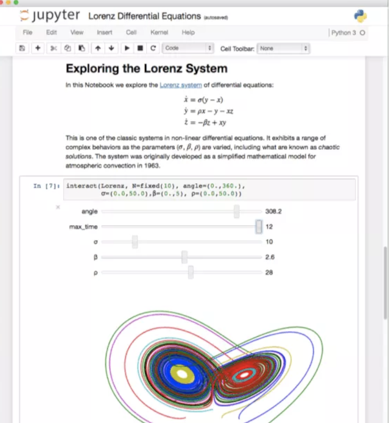

Python
Basics
Python is an object-oriented language (an object is an entity that contains data along with associated metadata and/or functionality).
One thing that distinguishes Python from many other programming languages is that it is interpreted rather than compiled. This means that it is executed line by line which is particular useful for data analysis, as well as the creation of interactive, executable documents like Jupyter Notebooks.
Python is an interpreted language. The Python interpreter runs a program by executing one statement at a time.
On top of this, there is a broad ecosystem of third-party tools and modules (like Jupyter Notebook) that offer more specialized data science functionality.
Jupyter Notebook
Jupyter Notebook is an open-source application that allows you to create and share documents that contain code, equations, visualizations and narrative text.

A notebook is basically a list of cells and the cells contain either
- explanatory text (written in markdown)
- executable code
- code output
Note that we will use Jupyter Notebook inside the coding editor Visual Studio Code or Google Colab.
Colab
Colaboratory, or “Colab” for short, is a free to use product from Google Research. Colab allows anybody to write and execute python code through the browser, and is especially well suited to perform data analysis and machine learning.
Colab is a free Jupyter notebook environment that requires no setup, and runs entirely on the Cloud.
Watch this video to get a first impression of Colab:
Let`s start your first Colab notebook to get an overview about some basic features:
Markdown
Markdown is one of the world’s most popular markup languages used in data science. Jupyter Notebooks use Markdown to provide an unified authoring framework for data science, combining code, its results, and commentary in Markdown.
Markdown is a simple way to format text that looks great on any device.
Review this sites to learn more about Markdown:
Anaconda
Basics
The open-source Anaconda Distribution is one of the easiest ways to get started with data science projects. It already includes Python and the most important data science modules.
Anaconda is a data science toolkit which already includes most of the data science modules we need.
Anaconda’s package manager conda makes it easy to manage multiple data environments that can be maintained and run separately without interference from each other (in so called virtual environments).
conda analyses the current environment including everything currently installed, and, together with any version limitations specified (e.g. the user may wish to have TensorFlow version 2.0 or higher), works out how to install a compatible set of dependencies, and shows a warning if this cannot be done.
Instead of conda, you can also use pip (the standard package installer for Python) to install packages.
Note that you should only use either conda or pip in one environment (we usually use pip).
If you already have Anaconda
If you already have Anaconda on your machine, make sure that you use the latest version (in our course, we use Python 3.11).
In your command line tool, type python --version to see which Python version you are using in your Anaconda base environment:
On Windows open the Start menu and open an “Anaconda Command Prompt”. Type
python --versionto see which Python version you are using in your Anaconda base environment.On macOS or Linux open a terminal window. Type
python --versionto see which Python version you are using in your Anaconda base environment.
You may also uninstall your current Anaconda environment from your machine and install the latest version: here a guide of how to uninstall Anaconda.
Installation
Install the latest version of the Anaconda Distribution:
After you have installed Anaconda, you can update it. The following commands will update all packages in the default “base” environment to the latest version but will not update Python:
On Windows open the Start menu and open an “Anaconda Command Prompt”.
On macOS or Linux open a terminal window.
In your terminal, type:
conda update --all
Now follow the steps described in the next section.
Anaconda environment
After you have installed and updated Anaconda, you can install the modules you need for a specific lab in a new environment.
Follow the instructions in the GitHub repo and install the environment
env-lab
Visual Studio Code
Basics
Visual Studio Code (also called Code) is a powerful source code editor which runs on your desktop and is available for Windows, macOS and Linux. It comes with a rich ecosystem of extensions for Python.
Visual Studio Code is a code editor that can be used with a variety of programming languages including Python.
Installation
Install VS Code:
Install extensions
The features that Visual Studio Code includes out-of-the-box are just the start. VS Code extensions let you add languages, debuggers, and tools to your installation to support your development workflow.
Let’s install some important extensions:
Jupyter Notebooks
We usually work with Jupyter Notebook files in VS Code:
To use a specific Anaconda environment as Jupyter kernel, select the kernel (e.g. lab) using the kernel picker in the top right of VS Code.
Optional tutorials
Some resources to get familiar with VS Code:
Working environment
Folder structure
Before you start a lab, you should always first create a new folder on your machine with the name of the lab (e.g. clustering). Here, we create a parent directory called “labs” where we can store the different labs.
Below is a tutorial on how to create a new folder called “labs” using the command line interface for both Windows and macOS.
Windows
- Press
Windows + Rkeys simultaneously to open the Run dialog. - Type
cmdand pressEnterto open the Command Prompt. - Navigate to the directory where you want to create the new folder using the
cd(change directory) command.
For example (replace YourUsername and \your\path):
cd C:\Users\YourUsername\your\path- Once you are in the desired directory, create a new folder named “labs” using the following command:
mkdir labsmacOS/Linux
- Open the Terminal application. You can find it in the Applications > Utilities folder or search for it using Spotlight.
- Navigate to the directory where you want to create the new folder using the cd (change directory) command.
For example For example (replace YourUsername and /your/path):
cd /Users/YourUsername/your/path- Once you are in the desired directory, create a new folder named “labs” using the following command:
mkdir labsEnvironment file
In most labs we need to access a database or an API. Since we do not want to include passwords and API-keys in our Python scripts, we need to create an environment (“env”) file. A .env file is a simple configuration file where environment-specific settings, such as database credentials or API keys, are stored in key-value pairs.
By separating these settings from the main application code, we can ensure that sensitive or environment-specific information is both easily configurable and not inadvertently shared or published. The . before a filename serves a specific purpose in many operating systems: A filename that starts with a . is considered a “hidden” file.
We will use libraries like python-dotenv to load the variables from the file into our Python script automatically.
Below are tutorials on how to create a .env file.
macOS
- Download the
envfile template - Open Finder and navigate to the “Downloads” folder
- Move the file in your “labs” folder.
- Open the file and replace the relevant placeholder (e.g.
YOUR-PASSWORD). - Save the changes.
- Rename the file from
envto.env(this will hide the file) - To view hidden files, you need to press the “Command” + “Shift” + “.” (period) keys at the same time. The hidden files will show up as translucent in the folder.
- If you want to obscure the files again, press the same “Command” + “Shift” + “.” (period) combination.
Windows 10
- Download the
envfile template - Open File Explorer from the taskbar.
- Move the file in your “labs” folder.
- Open the file and replace the relevant placeholder (e.g.
YOUR-PASSWORD). - Save the changes.
- Rename the file from
envto.env(this will hide the file) - To view the hidden file: Select View > Options > Change folder and search options.
- Select the View tab and, in Advanced settings, select Show hidden files, folders, and drives and OK.
Windows 11
- Download the
envfile template - Open File Explorer from the taskbar.
- Move the file in your “labs” folder.
- Open the file and replace the relevant placeholder (e.g.
YOUR-PASSWORD). - Save the changes.
- Rename the file from
envto.env(this will hide the file) - To view the hidden file: Select View > Show > Hidden items.